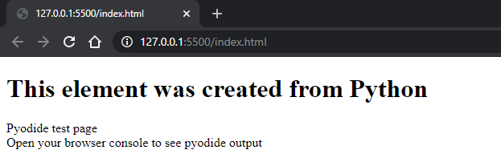

WASM Python Tutorial
By Carlos Lopez & Luis Wilson
In this tutotial, we are going to show you how to use Python on the web!
But not with Django or some fancy server. But with the wonder that is WebAssembler
(through the amazing prohect Pyodide)! Don't worry. We will show you how to install Pyodide, and 3 usage examples of Python on the web.
Installation
In order to use Pyodide, first we have to download the latest version tarball from the "latest releases" in the Pyodide repository.
Once downloaded, we have to extract the components into a local 'pyodide_local' folder and create an 'index.html' file where we will put our code.
Index.html Template:
Resulting page:

Check out these two awsome examples:
Example 1
Example 2